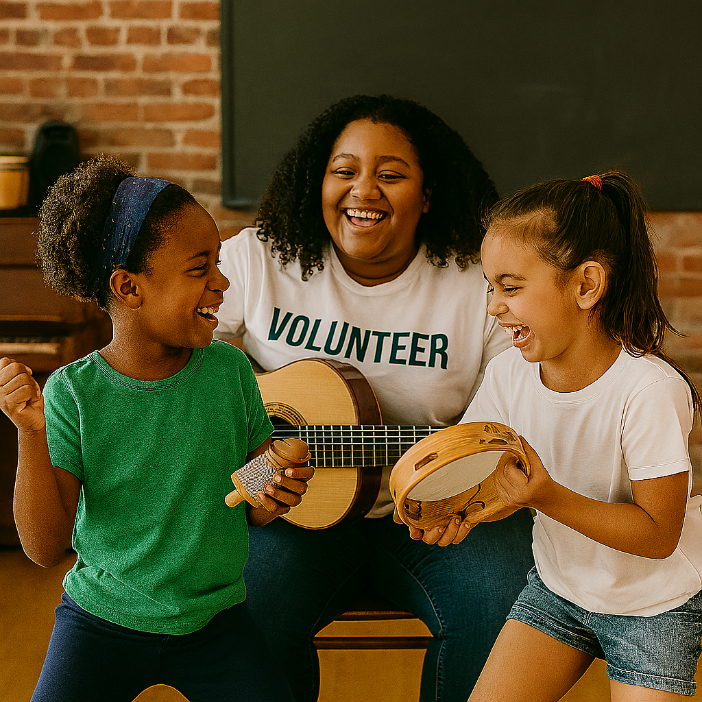
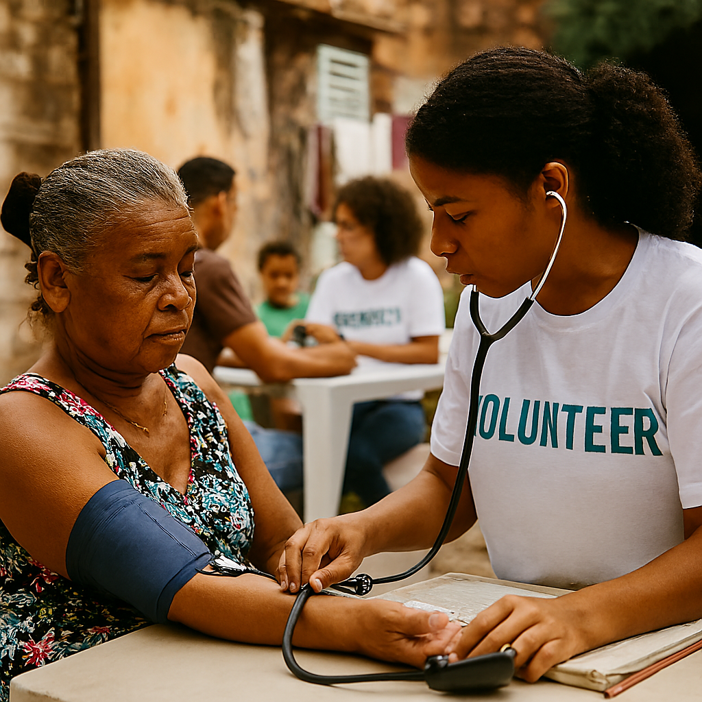
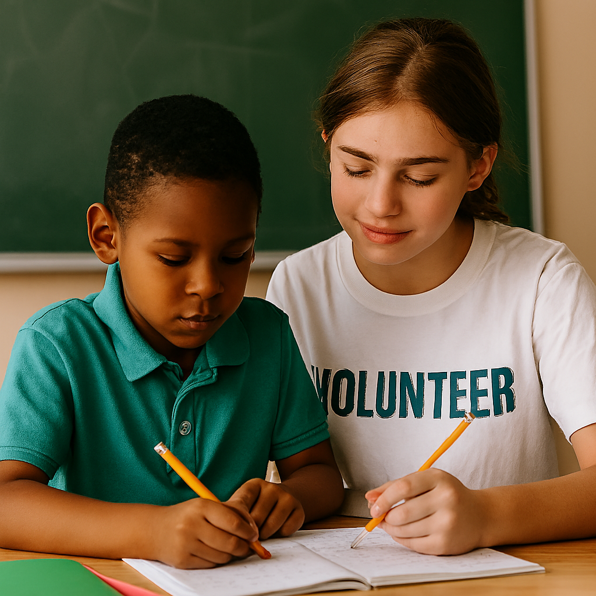
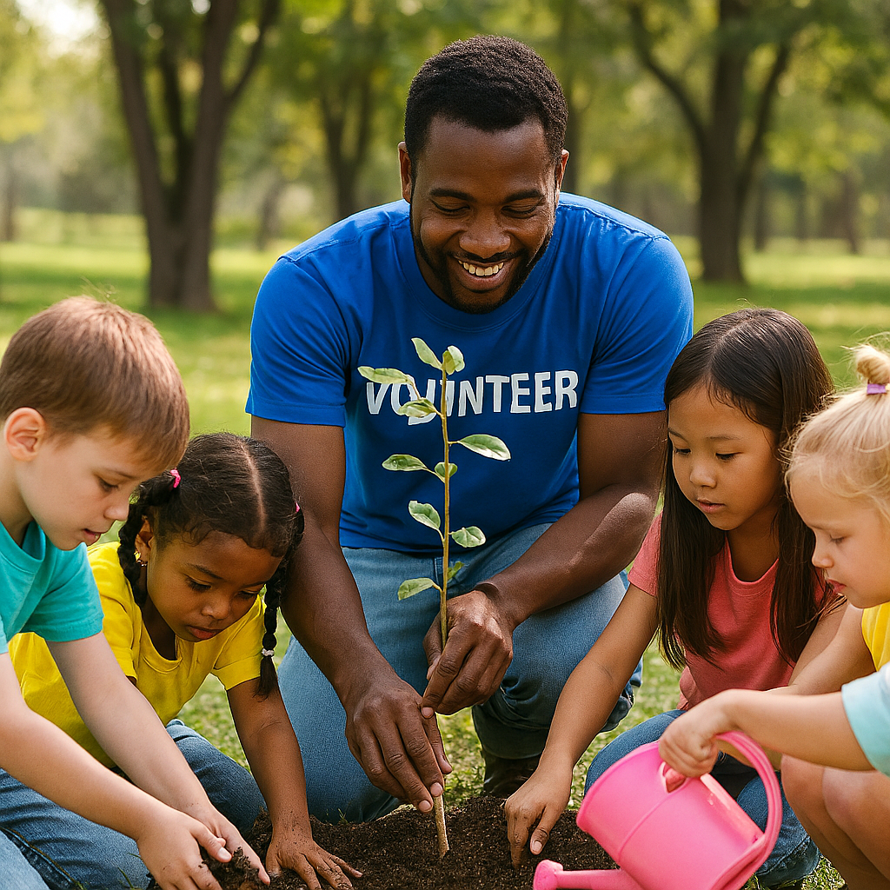
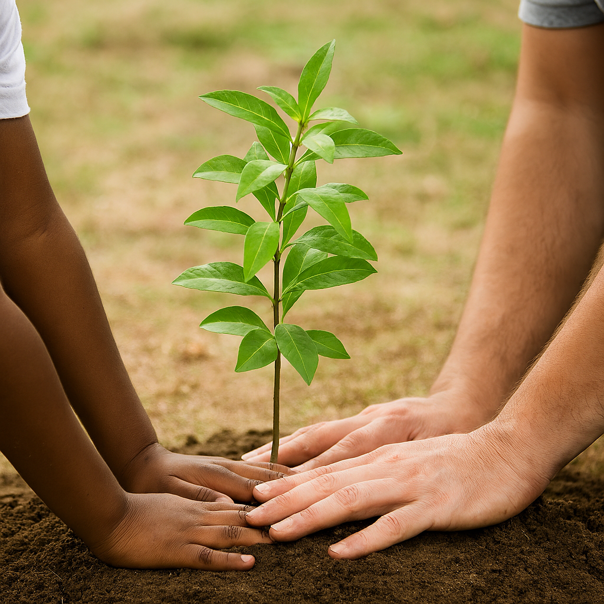
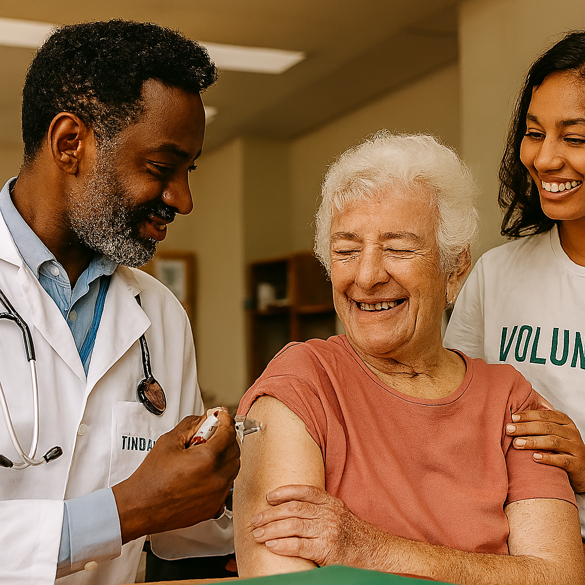
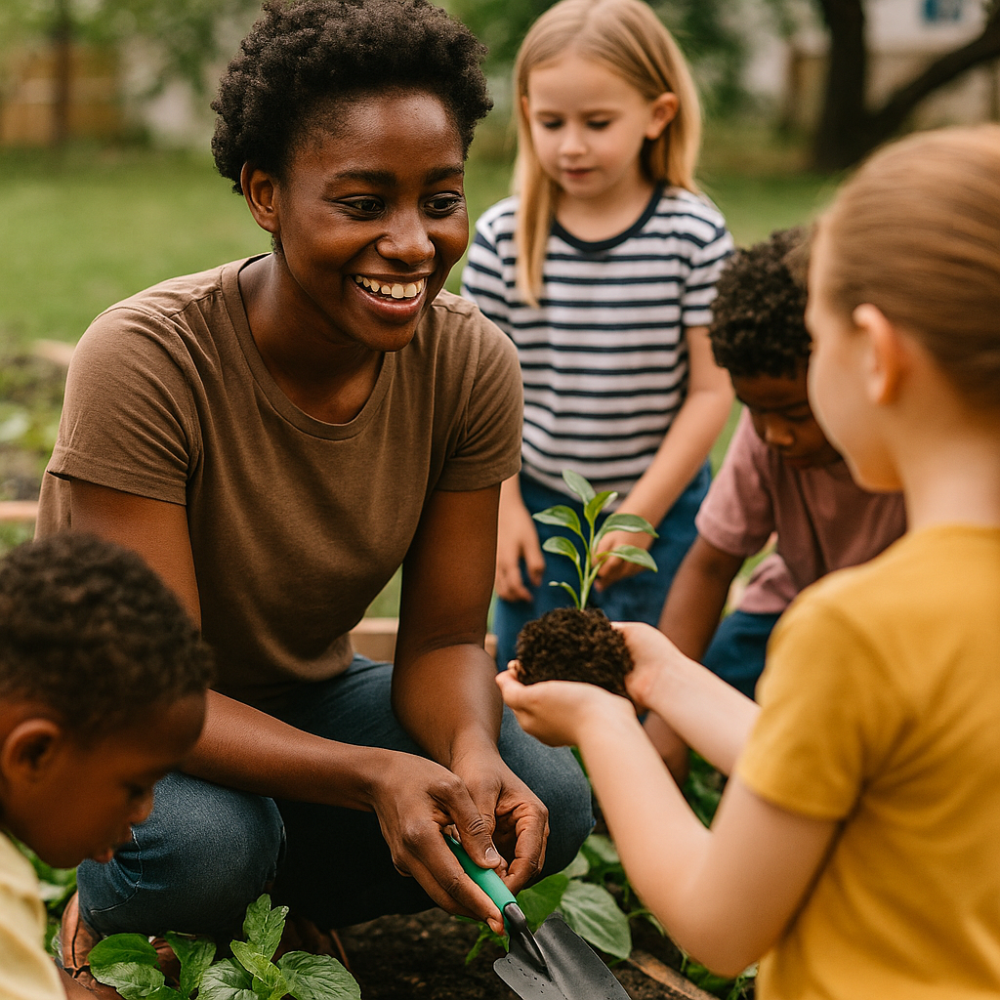

ONG Educar para mudar
Inspirando um futuro melhor
Projetos por Categoria



Projeto Saúde com Empatia
Atendimentos comunitários com voluntários em ações de saúde preventiva.
Saiba mais


Projeto Mãos na Terra
Oficinas de jardinagem e cuidado com o meio ambiente para crianças.
Saiba mais
Projeto Educação com Afeto
Acompanhamento pedagógico com foco em vínculo e acolhimento escolar.
Saiba mais

Projeto Cultivar Esperança
Atividades de plantio e educação ambiental com crianças e famílias em espaços comunitários.
Saiba mais

Projeto Saúde com Cuidado
Campanhas de vacinação e apoio comunitário para idosos, com equipe de saúde e voluntários.
Saiba mais

Projeto Jardim Comunitário
Oficinas de jardinagem e educação ambiental com crianças e famílias em espaços públicos.
Saiba mais
Projeto Cuidando de você
Atendimentos gratuitos realizados por profissionais da saúde em comunidades vulneráveis.
Saiba mais